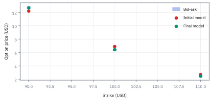

21.4 The Production Calibration Recipe
calibration ที่ใช้งานได้ทุกเช้าไม่ใช่การกด optimizer แล้วเอาค่าที่ความคลาดเคลื่อนต่ำสุด แต่เป็นลำดับขั้นที่ตกลงกันไว้ก่อน: คัดข้อมูล วัดความพลาดเทียบ bid–ask กันราคาผิดไม่ให้ลากผล ยึดกับค่าของเมื่อวาน ลองหลายจุดเริ่ม ตรวจ parameter แล้วบันทึกทุกอย่างให้รันซ้ำได้
ทีม quant รายงานผล calibrate Heston ห้าตัวกับ call ของ Apple (strike \$170 ถึง \$210 อายุ 25 ถึง 697 วัน) จากจุดเริ่มเดียวกันที่มี RMSE \$0.8659 สามวิธีได้ RMSE ดังนี้: grid search \$0.3670, Nelder–Mead \$0.2790 ($\kappa=1.95$, $\xi=0.116$) และ BFGS \$0.2661 ($\kappa=3.69$, $\xi=0.606$) หัวหน้าโต๊ะบอกให้ใช้ชุดของ BFGS เพราะความคลาดเคลื่อนต่ำที่สุด ควรทำตามไหม?
ลองตอบก่อนเปิดเฉลย
ยังไม่ควร BFGS ชนะ Nelder–Mead แค่ \$0.0129 (4.6%) แต่ $\kappa$ ต่างกัน 1.89 เท่าและ $\xi$ ต่างกัน 5.2 เท่า นี่คือร่องแบนแบบ 21.2 ที่ข้อมูลแยกสองชุดไม่ออก แต่ราคาสัญญาอื่นและ hedge ที่คำนวณจากสองชุดจะต่างกันมาก และชุดของ BFGS ไม่ผ่านเงื่อนไข Feller ของ 14.7: $2\kappa\theta=0.3532$ น้อยกว่า $\xi^2=0.3671$ variance ในแบบจำลองจึงแตะศูนย์ได้ การเลือกต้องผ่านประตูที่ตั้งไว้ก่อนเห็นผล ไม่ใช่เลือกจาก RMSE ตัวเดียว หน้านี้สร้างประตูเหล่านั้นทีละด่าน
สิ่งที่เราจะสร้าง
21.1 ให้กริดที่ตั้งราคาสัญญาที่ใช้สิทธิ์ก่อนได้ 21.2 ให้ optimizer ที่มีเบรก และ 21.3 ให้เครื่องตั้งราคาที่เร็วพอให้ optimizer เรียกซ้ำ หน้านี้ประกอบทุกชิ้นเป็นงานที่รันทุกเช้าก่อนตลาดเปิด แล้วคนอื่นตรวจรับได้ ใช้แบบจำลองเส้น variance ของ 21.2 เป็นตัวอย่างหลัก เพราะคำนวณตามได้ทุกตัวเลข และใช้ snapshot ของ option สาม strike กับผลของ Apple ข้างบนในด่านที่ต้องการ
ลำดับคือ แช่แข็งและคัดข้อมูลด้วยกฎที่เขียนไว้ก่อน วัดความพลาดในหน่วยครึ่งส่วนต่างและในหน่วยความผันผวน ตั้งประตูของ fit ใช้ Huber loss กับ quote ที่ผ่านการคัดแต่ผิด ดูวันที่สองที่ตลาดแทบไม่ขยับแต่ค่า $\kappa$ กระโดด แก้ด้วย prior จากเมื่อวาน ลองหลายจุดเริ่ม ตรวจ parameter ด้วย Feller แล้วจบที่บันทึกของการรัน การปล่อยใช้ และการถอยกลับ
ศัพท์ที่ใช้ในหัวข้อนี้
- Snapshot
- ชุดราคาที่แช่แข็งไว้ ณ เวลาเดียว (ในหน้านี้ 09:00:00) ใช้ให้ทุกขั้นถัดไปเห็นข้อมูลชุดเดียวกัน และให้คนอื่นรันซ้ำได้ มีไว้เพราะราคาที่เปลี่ยนระหว่างการคำนวณทำให้ผลตรวจย้อนไม่ได้
- Stale quote
- ราคาที่ไม่ได้อัปเดตนานเกินเกณฑ์เทียบกับเวลาของ snapshot ใช้คัดออกเพราะมันบอกตลาดของเมื่อก่อน ไม่ใช่ของตอนนี้
- Crossed quote
- ราคาที่ bid ไม่ต่ำกว่า ask ซึ่งซื้อขายจริงไม่ได้ ใช้เป็นสัญญาณว่าข้อมูลผิด ต้องกักไว้ตรวจ ไม่ใช่เอาค่าเฉลี่ยไปใช้
- Huber loss
- ความพลาดที่นับแบบกำลังสองเมื่อ residual เล็ก และนับแบบเส้นตรงเมื่อเกินเกณฑ์ $c$ ใช้ลดแรงดึงของ quote ผิดตัวเดียวที่หลุดการคัดมาได้ โดยยังเห็นมันเด่นในรายงาน
- Prior (MAP)
- การลงโทษเมื่อ parameter ออกห่างจากค่าของเมื่อวาน ได้จากการรวมข้อมูลวันนี้กับความเชื่อเดิมแบบ Bayes ใช้ลดการกระโดดของ parameter ที่ข้อมูลแยกไม่ออก
- Acceptance gate
- เกณฑ์ผ่านที่เขียนไว้ก่อนรัน เช่น residual ทุกตัวไม่เกิน 1 หรือผ่าน Feller ใช้ตัดสินว่าจะใช้ผลหรือไม่ โดยไม่ต้องใช้ความรู้สึกหลังเห็นผล
- Manifest
- บันทึกของการรันหนึ่งครั้ง: ข้อมูลที่ใช้ ค่าที่ตั้ง รุ่นของโค้ด ผลของทุกประตู และรหัสที่ระบุชุดนี้ ใช้รันซ้ำเมื่อมีข้อสงสัย และใช้ถอยกลับไปชุดล่าสุดที่ผ่าน
สัญลักษณ์และหน่วย
| สัญลักษณ์ | ความหมาย | หน่วย |
|---|---|---|
| $b_i,\ a_i$ | bid และ ask ของ quote ตัวที่ $i$ | USD หรือจุดความผันผวน |
| $m_i,\ h_i$ | ราคากลาง $(b_i+a_i)/2$ และครึ่งส่วนต่าง $(a_i-b_i)/2$ | ตามหน่วยของ quote |
| $r_i,\ L$ | residual ในหน่วยครึ่งส่วนต่าง และ objective | ไม่มีหน่วย |
| $\nu_i$ | vega: ราคาเปลี่ยนเท่าไรต่อความผันผวนหนึ่งจุด (14.3) | USD ต่อจุด |
| $c$ | เกณฑ์ของ Huber loss | ครึ่งส่วนต่าง |
| $x,\ x_{\rm prior},\ \gamma$ | parameter $(100v_0,\ 100\theta,\ \kappa)$ ของ 21.2 ค่าของเมื่อวาน และน้ำหนักของ prior | ตาม 21.2, ตาม 21.2, ไม่มีหน่วย |
| $\kappa,\ \theta,\ \xi,\ \rho,\ v_0$ | parameter ของ Heston (14.7) โดย $\xi$ คือ vol-of-vol | ต่อปี ยกเว้น $\rho$ ไม่มีหน่วย |
| RMSE | รากของค่าเฉลี่ยของ (ราคาจากแบบจำลอง − ราคาตลาด)² | USD |
ขั้นที่ 1 — แช่แข็ง snapshot แล้วคัดด้วยกฎที่เขียนไว้ก่อน
โจทย์ให้อะไรมาบ้าง: snapshot ของ variance swap เวลา 09:00:00 (ตัวเลขสมมติ ห้าตัวแรกคือ quote ของ 21.2) พร้อมเวลาอัปเดตล่าสุด กฎสามข้อเขียนไว้ก่อนเปิดดูข้อมูล: bid ต้องต่ำกว่า ask, quote ต้องอัปเดตภายใน 5 นาที และ total variance $T\,m_i$ ต้องเพิ่มขึ้นตามอายุ
| อายุ (ปี) | bid (%) | ask (%) | อัปเดตล่าสุด | ผล |
|---|---|---|---|---|
| 0.25 | 27.85 | 28.35 | 08:59:58 | ผ่าน |
| 0.5 | 26.60 | 27.10 | 08:59:57 | ผ่าน |
| 0.75 | 25.90 | 25.40 | 08:59:59 | crossed: ตัดออก |
| 1 | 24.45 | 25.05 | 08:59:59 | ผ่าน |
| 1.5 | 24.70 | 25.30 | 08:59:58 | ผ่าน |
| 2 | 22.55 | 23.35 | 08:59:56 | ผ่าน |
| 3 | 21.40 | 22.40 | 08:59:55 | ผ่าน |
| 5 | 20.80 | 21.80 | 08:21:10 | ค้าง 38.8 นาที: ตัดออก |
คำตอบ: ตัด 0.75 ปี (bid 25.90 สูงกว่า ask 25.40) และ 5 ปี (อัปเดตก่อน snapshot 2,330 วินาที) เหลือหกตัวที่ total variance เพิ่มขึ้นทุกช่วง ถ้าตัวใดทำให้ total variance ลดลง การซื้อ variance swap อายุยาวกับขายอายุสั้นจะได้เงินฟรี (calendar arbitrage) แถวล่างคือกรณีพิมพ์ผิดที่ 2 ปีเป็น 32.55 / 33.35 ซึ่งผ่านกฎสองข้อแรก แต่ total variance 0.2172 มากกว่าของ 3 ปี กฎข้อที่สามจับได้และกักทั้ง snapshot ไว้
ตรวจเองใน 10 วินาที: 09:00:00 ลบ 08:21:10 คือ 38 นาที 50 วินาที หรือ 2,330 วินาที ส่วน quote 1.5 ปี ผ่านทุกกฎทั้งที่ขั้นที่ 5 จะพบว่ามันผิด กฎคัดข้อมูลจับได้เฉพาะความผิดที่ละเมิดกติกาของตลาด ความผิดที่ดูเป็นไปได้ต้องให้ด่านถัดไปจับ
ขั้นที่ 2 — วัดความพลาดเทียบ bid–ask และแปลงเป็นความผันผวนด้วย vega
ความพลาด \$0.04 บน option ราคา \$12.70 กับบน option ราคา \$2.50 มีความหมายไม่เท่ากัน ต้องมีไม้บรรทัดเดียวกัน ไม้บรรทัดที่ตลาดให้คือครึ่งส่วนต่าง: ราคาจากแบบจำลองอยู่ใน bid–ask ก็ต่อเมื่อ residual ไม่เกิน 1 ส่วนโต๊ะที่คุยกันด้วยความผันผวนใช้ vega แปลงความพลาดเป็นจุดความผันผวน ใช้ snapshot ของ call สาม strike (สมมติเป็นหุ้นของ 14.1: $S_0=100$, อายุ 3 เดือน, $r=4\%$)
บรรทัดที่สามลบ $m_i$ ทั้งสามฝั่งของช่วง bid–ask แล้วหารด้วย $h_i$ บรรทัดที่ห้าคือ Taylor อันดับหนึ่งของราคาในความผันผวน ซึ่งความชันคือ vega ของ 14.3
หารสองข้างด้วย $h_i$ ได้บรรทัดสุดท้าย: residual ในหน่วยครึ่งส่วนต่างคือความพลาดของความผันผวน วัดด้วยครึ่งส่วนต่างที่แปลงเป็นจุดความผันผวนแล้ว สองไม้บรรทัดจึงเป็นไม้เดียวกัน
| strike | bid–ask | implied vol ของ mid | vega ต่อจุด | $h_i$ เป็นจุด |
|---|---|---|---|---|
| 90 | 12.50–12.90 | 30.08% | 0.1399 | 1.43 |
| 100 | 6.30–6.50 | 29.70% | 0.1975 | 0.51 |
| 110 | 2.40–2.60 | 28.44% | 0.1734 | 0.58 |
ส่วนต่าง \$0.40 ของ strike 90 กว้าง ±1.43 จุดความผันผวน ขณะที่ \$0.20 ของ strike 100 กว้างแค่ ±0.51 จุด ถ้าวัดความพลาดเป็นเงินล้วน (RMSE) quote ราคาสูงจะมีเสียงดังเกินจริง ถ้าวัดเป็นสัดส่วนของราคา quote ราคาต่ำจะดังเกินจริง การหารด้วยครึ่งส่วนต่างให้แต่ละ quote มีเสียงตามความมั่นใจของตลาดต่อ quote นั้น
ขั้นที่ 3 — ประตูของ fit: ทุก residual ต้องอยู่ในแถบ
โจทย์ให้อะไรมาบ้าง: snapshot เดิม แบบจำลองก่อนปรับให้ราคา 12.20, 6.90 และ 2.70 หลังปรับให้ 12.66, 6.43 และ 2.48 (ราคาสมมติ) ประตูคือ residual ทุกตัวไม่เกิน 1 เทียบกับการรายงานแบบ RMSE และความพลาดสัมพัทธ์
คำตอบ: ก่อนปรับ residual 5.0 ที่ strike 100 คือราคาห่าง mid ห้าเท่าของครึ่งส่วนต่าง ไม่ผ่าน ($L=17.625$) หลังปรับ residual สูงสุด 0.3 จึงผ่าน ความพลาดเป็นเงินคือ 0.04, 0.03 และ 0.02 (ตัวแรกดังสุด) เป็นสัดส่วนคือ 0.31%, 0.47% และ 0.80% (ตัวสุดท้ายดังสุด) ในหน่วยครึ่งส่วนต่าง strike 100 ดังสุด เพราะส่วนต่างของมันแคบที่สุดเมื่อเทียบเป็นความผันผวน ประตูไม่ได้ถามว่าเฉลี่ยแล้วดีไหม แต่ถามว่ามีตัวไหนหลุดแถบไหม
ตรวจเองใน 10 วินาที: $12.66$ อยู่ใน 12.50 ถึง 12.90, $6.43$ อยู่ใน 6.30 ถึง 6.50 และ $2.48$ อยู่ใน 2.40 ถึง 2.60 เป็นความพลาดเชิงความผันผวน −0.29, +0.15 และ −0.12 จุด เทียบกับแถบ ±1.43, ±0.51 และ ±0.58 จุด
Figure 21.4a — ประตูของ fit: residual ทุกตัวต้องอยู่ในแถบ

Figure 21.4b — ราคาจากแบบจำลองเทียบกับแถบ bid–ask

ขั้นที่ 4 — Huber loss: กำลังสองเมื่อพลาดน้อย เส้นตรงเมื่อพลาดมาก
quote 1.5 ปีของขั้นที่ 1 ผ่านการคัดแต่ห่างจากตลาดจริง ถ้านับความพลาดเป็นกำลังสอง quote นี้จะดึงผลทั้งชุด เพราะแรงดึงของกำลังสองโตตามขนาดของ residual วิธีของ Huber คือให้แรงดึงโตตาม residual จนถึงเกณฑ์ $c$ แล้วหยุดโต จากนั้นหา loss จากการอินทิเกรตแรงดึงนั้น
$\psi_c$ คือแรงดึงที่ quote หนึ่งตัวกระทำต่อผล ในกำลังสองธรรมดาแรงดึงคือ $r$ ไม่มีเพดาน อินทิกรัลช่วงแรกคือพื้นที่สามเหลี่ยม $\tfrac12r^2$ ช่วงที่เกิน $c$ คือสามเหลี่ยมเดิมบวกสี่เหลี่ยมสูง $c$
พจน์ $-\tfrac12c$ ในวงเล็บทำให้สองช่วงต่อกันพอดีและความชันต่อเนื่องที่ $\lvert r\rvert=c$ optimizer ของ 21.2 ที่ใช้ความชันจึงไม่สะดุด
ที่ $r=3$ loss ลดจาก 4.5 เหลือ 3.375 แต่ที่สำคัญกว่าคือแรงดึงถูกตัดที่ 1.5 แทน 3 quote ผิดตัวเดียวจึงดึงได้ไม่เกินครึ่งหนึ่ง Huber ไม่ได้ลบ quote ทิ้ง มันแค่ลดเสียง ส่วน quote นั้นยังแสดง residual ใหญ่ให้คนเห็นในรายงาน
Figure 21.4c — least squares เทียบ Huber ที่ c = 1.5

ขั้นที่ 5 — quote ผิดหนึ่งตัวดึงผลไปเท่าไร
โจทย์ให้อะไรมาบ้าง: หก quote ที่ผ่านการคัดในขั้นที่ 1 fit เส้น variance ของ 21.2 ด้วย Levenberg–Marquardt จากจุดเริ่ม $(7,5,1)$ สามแบบ: กำลังสองธรรมดา, Huber ที่ $c=1.5$ และกำลังสองหลังตัด quote 1.5 ปีออกเมื่อผู้ค้ายืนยันว่ามันไม่ได้อัปเดตตามตลาด อ่าน parameter, residual และ variance swap 10 ปีที่ยังไม่มี quote
| แบบ | $v_0$ | $\theta$ | $\kappa$ | residual (0.25, 0.5, 1, 1.5, 2, 3 ปี) | 10 ปี (%) |
|---|---|---|---|---|---|
| กำลังสอง | 0.0853 | 0.0369 | 1.29 | −0.49, 0.35, 1.90, −2.82, 0.84, 0.52 | 20.16 |
| Huber | 0.0874 | 0.0390 | 1.62 | −0.15, 0.01, 1.10, −3.60, 0.33, 0.38 | 20.48 |
| ตัด 1.5 ปี | 0.0894 | 0.0394 | 1.90 | 0.14, −0.33, 0.34, ตัดออก, −0.22, 0.08 | 20.51 |
คำตอบ: กำลังสองธรรมดาให้ quote ผิดตัวเดียวดึง $\kappa$ จาก 1.90 ลงเหลือ 1.29 และทำให้ quote ที่ถูกต้องที่ 1 ปีหลุดแถบไปด้วย (1.90) รายงานจึงเห็นสองตัวหลุด โดยไม่รู้ว่าตัวไหนผิด Huber ดึงน้อยกว่า ($\kappa=1.62$) และทำให้ตัวผิดเด่นชัด (−3.60) ขณะที่ตัวอื่นเกือบทั้งหมดกลับเข้าแถบ ประตูของขั้นที่ 3 ยังไม่ผ่าน จึงส่งให้คนตรวจ เมื่อยืนยันแล้วตัดออก ผลคือชุดของ 21.2 พอดี
ตรวจเองใน 10 วินาที: ที่ residual −3.60 Huber นับ $1.5(3.60-0.75)=4.28$ แทน $\tfrac12(3.60)^2=6.50$ ราคา 10 ปีของสามแบบคือ 20.16%, 20.48% และ 20.51% quote ผิดตัวเดียวที่ 1.5 ปีจึงเลื่อนราคาของสัญญาที่ไม่มีใคร quote ได้ 0.35 จุด
ขั้นที่ 6 — วันที่สอง: ตลาดแทบไม่ขยับ แต่ $\kappa$ กระโดด
โจทย์ให้อะไรมาบ้าง: เช้าวันถัดมา quote ทั้งห้าตัวที่ใช้เมื่อวานขยับ +0.10, −0.10, −0.10, +0.10 และ +0.10 จุดความผันผวน ซึ่งเล็กกว่าครึ่งส่วนต่างทุกตัว (0.25 ถึง 0.50 จุด) fit ใหม่ด้วยวิธีเดิม เริ่มจากคำตอบของเมื่อวาน
คำตอบ: fit ใหม่ผ่านประตูสบาย ๆ แต่ $\kappa$ ขึ้น 21% และราคา variance swap 10 ปีที่โต๊ะ mark ไว้ขยับ 0.44 จุด ทั้งที่ไม่มี quote ตัวไหนขยับเกิน 0.10 จุด สาเหตุคือร่องแบนของ 21.2: ข้อมูลยอมรับ $\kappa$ ได้ตั้งแต่ราว 1.41 ถึง 2.52 เสียงรบกวนเล็กน้อยจึงพาคำตอบเลื่อนไปตามร่อง ถ้าปล่อยแบบนี้ทุกวัน ราคาสัญญายาวจะแกว่งโดยไม่มีข่าวใด และ hedge ต้องปรับตามโดยเสียต้นทุนทุกวัน
ตรวจเองใน 10 วินาที: $2.307/1.902=1.21$ และ $20.95-20.51=0.44$ ซึ่งใหญ่กว่าการขยับของ quote ใดถึงสี่เท่า สัญญาณนี้ (ราคาที่ไม่มี quote ขยับมากกว่าทุก input) ควรเป็นหนึ่งในตัวเลขที่ระบบรายงานทุกวัน
ขั้นที่ 7 — prior จากเมื่อวาน: ข้อมูลวันนี้บวกความเชื่อเดิม
ทางแก้คือบอก optimizer ว่า ถ้าข้อมูลวันนี้แยกไม่ออกระหว่างหลายคำตอบ ให้เลือกคำตอบที่ใกล้เมื่อวาน เขียนเป็นความน่าจะเป็นแบบ Bayes: เสียงรบกวนของราคาเป็นปกติตามขั้นที่ 2 ของ 21.2 และความเชื่อเดิมคือ parameter กระจายแบบปกติรอบค่าของเมื่อวาน รวมกันแล้วใส่ลบ log
บรรทัดที่สามคือกฎของ Bayes ของ 1.7 ลบ log ของผลคูณกลายเป็นผลบวกของสองพจน์ จุดต่ำสุดของ $L_\gamma$ คือ parameter ที่มีโอกาสสูงสุดหลังเห็นข้อมูล (maximum a posteriori)
$\gamma$ บอกว่าเชื่อเมื่อวานแค่ไหน: $\gamma=1$ แปลว่าการขยับหนึ่งหน่วยของ $x$ (เช่น $\kappa$ ขยับ 1 หรือ $v_0$ ขยับ 0.01) มีราคาเท่ากับ residual ขนาด 1 ของหนึ่ง quote
ในวิธีของ 21.2 prior คือสามแถวที่เพิ่มเข้าไปใน $J$ แถวละ $\sqrt\gamma$ ทำให้ $J^{\top}J$ ได้ $\gamma I$ เพิ่มบนเส้นทแยง คือเติมความโค้งให้ทุกทิศเท่ากัน ทิศตามร่องแบนได้ผลมากที่สุด เพราะเดิมแทบไม่มีความโค้งเลย
| $\gamma$ | $\kappa$ | $v_0$ | $\theta$ | $\max\lvert r_i\rvert$ | 10 ปี (%) |
|---|---|---|---|---|---|
| 0 | 2.307 | 0.0916 | 0.0417 | 0.39 | 20.95 |
| 1 | 2.148 | 0.0907 | 0.0409 | 0.43 | 20.80 |
| 10 | 1.961 | 0.0896 | 0.0398 | 0.59 | 20.58 |
ทุกแถวผ่านประตูของขั้นที่ 3 แต่แถว $\gamma=10$ ย้าย $\kappa$ จากเมื่อวานแค่ 0.06 และราคา 10 ปีแค่ 0.07 จุด แลกกับ residual สูงสุดที่เพิ่มจาก 0.39 เป็น 0.59 ค่า $\gamma$ ต้องเลือกไว้ก่อนและบันทึกไว้ ใหญ่เกินไปแบบจำลองจะไม่ยอมตามตลาดเมื่อตลาดเปลี่ยนจริง ซึ่งประตูของขั้นที่ 3 จะจับได้เพราะ residual จะหลุดแถบ
ขั้นที่ 8 — หลายจุดเริ่ม และ Heston ห้าตัวจากข้อมูลจริง
โจทย์ให้อะไรมาบ้าง: เส้น variance ของวันแรก (ห้า quote ที่สะอาด) fit จากห้าจุดเริ่ม: $(7,5,1)$, $(9,4,6)$, $(12,3,5)$, $(6,3,3)$ และคำตอบเอง จากนั้นดูผลจริงของ Heston ห้าตัวในโจทย์เปิดเรื่อง ซึ่งสามวิธีเริ่มจากชุด $(\kappa,\theta,\xi,\rho,v_0)=(2.3,\ 0.046,\ 0.0825,\ -0.53,\ 0.054)$ เดียวกัน
คำตอบ: ทั้งห้าจุดเริ่มของเส้น variance จบที่ $L=0.1518391$ และ parameter เดียวกันถึงทศนิยมตำแหน่งที่เจ็ด หุบของแบบจำลองสามตัวนี้มีก้นเดียว ส่วน Heston ห้าตัวจากจุดเริ่มเดียวกันไปได้สามที่ต่างกันมาก (Figure 21.4d) grid search ถูกขังด้วยขอบของกริด Nelder–Mead กับ BFGS ได้ RMSE ห่างกัน 0.0129 แต่ $\kappa$ และ $\xi$ ขึ้นพร้อมกัน 1.89 และ 5.2 เท่า คือร่องระหว่าง $\kappa$ กับ $\xi$ แบบ Figure 21.2e
การเลือกจุดเริ่มทำได้เป็นระบบ: เอาสองชุดที่รู้จักมาผสมเป็นเส้นตรง $x(\alpha)=\alpha x_1+(1-\alpha)x_2$ เช่นครึ่งทางระหว่าง $(1,\ 0.02,\ 0.05,\ -0.4,\ 0.08)$ กับ $(3,\ 0.06,\ 0.10,\ -0.6,\ 0.04)$ คือ $(2,\ 0.04,\ 0.075,\ -0.5,\ 0.06)$ แล้วดูว่า $L$ ตามเส้นนั้นมีหุบเดียวหรือหลายหุบ และใส่คำตอบของเมื่อวานเป็นจุดเริ่มเสมอ
ตรวจเองใน 10 วินาที: $0.2790-0.2661=0.0129$ คือ 4.6% ของ 0.2790 ส่วน $3.6941/1.9524=1.89$ และ $0.6059/0.1159=5.23$ ถ้าหลายจุดเริ่มจบคนละที่ด้วย $L$ ใกล้กัน อย่าเลือกตัวที่ต่ำสุดเพียงเพราะมันต่ำสุด ให้ส่งทุกตัวผ่านประตูของขั้นที่ 9
Figure 21.4d — ความคลาดเคลื่อนต่ำลง แต่ parameter ต่างกันมาก

ขั้นที่ 9 — ประตูของ parameter: เงื่อนไข Feller
โจทย์ให้อะไรมาบ้าง: เงื่อนไข Feller ของ 14.7 บอกว่า variance ในแบบจำลองไม่แตะศูนย์เมื่อ $2\kappa\theta\ge\xi^2$ ตรวจทั้งสี่ชุดของ Heston ในขั้นที่ 8
คำตอบ: สามชุดแรกผ่านสบาย ๆ ชุดของ BFGS ซึ่ง RMSE ต่ำสุดไม่ผ่าน: $2(3.6941)(0.0478)=0.3532$ น้อยกว่า $0.6059^2=0.3671$ ไม่ผ่านไม่ได้แปลว่าผิดทางคณิตศาสตร์ แต่แปลว่า variance แตะศูนย์ได้ การจำลองแบบ 14.7 ขั้นที่ 5 จะมีก้าวที่ variance ติดลบบ่อยขึ้น และ vol-of-vol 0.61 สูงกว่าอีกสามชุดราว 5 ถึง 7 เท่า ระบบจึงควรส่งชุดนี้ให้คนตรวจ หรือบังคับ $2\kappa\theta\ge\xi^2$ เป็นขอบใน optimizer แล้ว fit ใหม่ ชุดของ Nelder–Mead ผ่านทั้งประตูนี้และมี RMSE ห่างไม่ถึง 5%
ตรวจเองใน 10 วินาที: ที่ $\kappa=3.6941$ และ $\theta=0.0478$ vol-of-vol ที่ยังผ่าน Feller ได้สูงสุดคือ $\sqrt{0.3532}=0.594$ ต่ำกว่า 0.6059 ของ BFGS เพียงนิดเดียว คำตอบที่ติดขอบของเงื่อนไขแบบนี้คือสัญญาณว่า optimizer กำลังใช้ vol-of-vol ชดเชยสิ่งที่แบบจำลองไม่มี เช่นการกระโดด
Figure 21.4e — ตรวจ Feller ของทั้งสี่ชุด

ขั้นที่ 10 — บันทึกของการรัน การปล่อยใช้ และการถอยกลับ
โจทย์ให้อะไรมาบ้าง: การรันที่ผ่านทุกประตูต้องรันซ้ำได้ตรงทุกหลัก และถ้าวันไหนไม่ผ่าน ต้องมีชุดล่าสุดที่ผ่านให้ใช้แทน บันทึก (manifest) ของการรันวันแรกเก็บ snapshot ที่คัดแล้ว แบบจำลอง loss จุดเริ่ม รุ่นของโค้ด แล้วคำนวณรหัส 32 บิตแบบ FNV-1a จากทั้งหมด ถ้า input ตัวใดเปลี่ยนแม้หนึ่งหลัก รหัสจะเปลี่ยน
| ประตู | หลักฐานขั้นต่ำ | ถ้าไม่ผ่าน |
|---|---|---|
| ข้อมูล | เวลา, crossed, ค้าง, calendar arbitrage (ขั้นที่ 1) | ตัด quote หรือกักทั้ง snapshot |
| fit | $\lvert r_i\rvert\le1$ ทุกตัว และ quote ที่ถูกลดเสียงด้วย Huber (ขั้นที่ 3 ถึง 5) | ส่งให้ผู้ค้าตรวจ ห้ามลบเงียบ |
| เครื่องตั้งราคา | $\varphi(0)=1$, forward, parity, ราคาลดลงและโค้งหงายตาม strike (21.3), กริดลู่เข้า (21.1) | ไม่ใช้ผลของเครื่องนั้น |
| parameter | ขอบเขต, Feller, หลายจุดเริ่มจบที่เดียวกัน, ช่วงที่ข้อมูลยอมรับ (ขั้นที่ 8, 9 และ 21.2) | ใช้ prior, บังคับขอบ หรือส่งตรวจ |
| ความนิ่ง | การขยับของ parameter และราคาที่ไม่มี quote เทียบกับการขยับของ input (ขั้นที่ 6, 7) | ใช้ prior หรือคงชุดของเมื่อวาน |
| บันทึก | manifest และรหัส, ผลของทุกประตู, ผู้อนุมัติ | ไม่ปล่อยใช้ |
คำตอบ: รหัสของการรันวันแรกคือ d0240b38 ใครก็ได้ที่มี snapshot เดียวกันและโค้ดรุ่นเดียวกันต้องได้รหัสนี้และ parameter เดียวกันทุกหลัก ชุดที่ผ่านถูกปล่อยให้ระบบตั้งราคาใช้ ชุดล่าสุดที่ผ่านถูกเก็บไว้เป็นทางถอย ถ้าเช้าวันใดไม่ผ่านประตู ระบบใช้ชุดนั้นต่อและแจ้งผู้รับผิดชอบ ไม่ปล่อยชุดที่ไม่ผ่านออกไปเพียงเพราะ optimizer บอกว่า “สำเร็จ”
ตรวจเองใน 10 วินาที: optimizer บอกได้แค่ว่าเกณฑ์หยุดของมันผ่าน ไม่ได้บอกว่าข้อมูลถูก parameter มีความหมาย หรือราคาของสัญญาอื่นนิ่ง ทุกข้อในตารางคือสิ่งที่ optimizer ไม่รู้
คำถามที่ควรถามออกมาดัง ๆ
ทำไมไม่ใช้ Huber ตลอดแล้วไม่ต้องมีคนตรวจ? Huber ลดแรงดึงของ quote ผิด แต่ไม่รู้ว่าตัวไหนผิดจริง ถ้าตลาดขยับจริงเฉพาะอายุหนึ่ง Huber จะลดเสียงของข้อมูลที่ถูกด้วย ขั้นที่ 5 ใช้มันเพื่อให้ตัวผิดเด่น แล้วให้คนตัดสิน
prior ทำให้แบบจำลองดื้อต่อข่าวไหม? ดื้อเท่าที่ $\gamma$ กำหนด และประตูของขั้นที่ 3 เป็นตัวกัน: ถ้าตลาดเปลี่ยนจริงจน residual หลุดแถบ แปลว่าต้องลด $\gamma$ หรือยอมให้ parameter ขยับ prior มีไว้เลือกระหว่างคำตอบที่ข้อมูลแยกไม่ออก ไม่ได้มีไว้ต้านข้อมูลที่ชัด
ความผิดที่ให้ตัวเลขผิดโดยไม่มีอะไรเตือน
เลือกชุดที่ความคลาดเคลื่อนต่ำสุด: BFGS ชนะ Nelder–Mead 0.0129 แต่ไม่ผ่าน Feller และอยู่คนละที่ของร่อง ถ้าเลือกตามความสูงของแท่งอย่างเดียว ราคาและ hedge ของสัญญาอื่นจะกระโดดตามชุดที่ optimizer บังเอิญไปจบ
รายงานแค่ค่าเฉลี่ย: fit แบบกำลังสองในขั้นที่ 5 มี quote หลุดแถบสองตัว (1.90 และ −2.82) ถ้ารายงานแค่ $L$ หรือ RMSE จะไม่เห็นว่าตัวที่ถูกต้องที่ 1 ปีถูกลากออกไปด้วย ต้องดู residual ทุกตัวในหน่วยครึ่งส่วนต่าง
ปล่อย parameter ตามข้อมูลทุกเช้า: ขั้นที่ 6 ราคา 10 ปีขยับ 0.44 จุดโดยไม่มีข่าว การกระโดดแบบนี้เป็นต้นทุนจริงเพราะ hedge ต้องปรับตาม ใช้ prior และรายงานการขยับของราคาที่ไม่มี quote ทุกวัน
เติมช่องว่างแล้วเรียกว่าราคาตลาด: ถ้า interpolate quote ที่ถูกตัดแล้วส่งเข้า fit ในฐานะราคาตลาด แบบจำลองจะ fit สิ่งที่เราสร้างเอง แยกข้อมูลที่เห็นจริง ข้อมูลที่คำนวณเพิ่ม และข้อมูลที่ตัดทิ้งออกจากกันในบันทึกเสมอ
ใช้ทำอะไรบนโต๊ะจริง
ธนาคารและกองทุนที่ถือ option หรือสัญญาที่ตั้งราคาด้วยแบบจำลองรันขั้นตอนแบบนี้ทุกเช้า ก่อนตลาดเปิดและบางครั้งระหว่างวัน parameter ที่ผ่านใช้ตั้งราคาสัญญาที่ตลาดไม่มีให้ดู คำนวณ Greeks ให้ hedge และตีราคาพอร์ตประจำวัน ฝ่ายควบคุมความเสี่ยงของแบบจำลองต้องการ manifest และผลของทุกประตู เพื่อรันซ้ำเมื่อมีข้อพิพาทเรื่องราคา
ในทางปฏิบัติเวลาส่วนใหญ่หมดไปกับขั้นที่ 1 และการตรวจข้อยกเว้น ไม่ใช่กับคณิตศาสตร์ของ optimizer ข้อมูลที่ค้าง ผิด หรือหายเกิดทุกวัน และแต่ละแบบต้องมีกฎที่เขียนไว้ก่อนว่าจะทำอย่างไร
สามโจทย์ตรวจความเข้าใจ
1. option สองตัวมี bid–ask 8.10–8.40 และ 4.00–4.20 แบบจำลองให้ 8.30 และ 4.25 หา residual, $L$ และบอกว่าผ่านประตูไหม
เฉลย
mid คือ 8.25 และ 4.10 ครึ่งส่วนต่างคือ 0.15 และ 0.10 residual $=(8.30-8.25)/0.15=0.33$ และ $(4.25-4.10)/0.10=1.5$ ได้ $L=\tfrac12(0.111+2.25)=1.181$ ไม่ผ่าน เพราะตัวที่สองอยู่เหนือ ask (4.25 เกิน 4.20) แม้ความพลาดเป็นเงินแค่ \$0.15
2. quote หนึ่งตัวมี residual 5 ด้วย Huber ที่ $c=1.5$ loss และแรงดึงของมันเป็นเท่าไร เทียบกับกำลังสองธรรมดา
เฉลย
Huber: $\rho=1.5(5-0.75)=6.375$ และแรงดึง $\psi=1.5$ กำลังสองธรรมดา: $\tfrac12(25)=12.5$ และแรงดึง 5 quote นี้จึงดึงผลได้แค่ 30% ของที่มันดึงในกำลังสองธรรมดา ตรงกับปลายของ Figure 21.4c
3. ชุดของ grid ในขั้นที่ 8 มี $\kappa=1.8$ และ $\theta=0.046$ vol-of-vol สูงสุดที่ยังผ่าน Feller คือเท่าไร และชุดของ BFGS ต้องลด $\xi$ ลงเท่าไรจึงผ่าน
เฉลย
grid: $\xi\le\sqrt{2(1.8)(0.046)}=\sqrt{0.1656}=0.407$ ส่วน 0.0925 ที่ได้ห่างขอบมาก BFGS: $\xi\le\sqrt{0.3532}=0.594$ ต้องลดจาก 0.6059 ลง 0.012 ซึ่ง optimizer ที่มีขอบนี้จะหยุดที่ขอบแล้วชดเชยด้วยตัวอื่น ต้อง fit ใหม่ ไม่ใช่แก้ตัวเลขด้วยมือ
คำนวณซ้ำด้วย JavaScript
รันใน Node.js ได้โดยไม่ติดตั้งแพ็กเกจ โค้ดนี้ตรวจรูปแบบของข้อมูลก่อนคำนวณ คัด snapshot ด้วยกฎสามข้อ วัดความพลาดของ snapshot option เป็นครึ่งส่วนต่างและเป็นจุดความผันผวน fit เส้น variance ด้วยกำลังสอง Huber และ prior ลองหลายจุดเริ่ม ตรวจ Feller ของชุด Heston แล้วสร้าง manifest พร้อมรหัส พิมพ์ทุกตัวเลขเป็น JSON บรรทัดเดียว
// A morning calibration run: freeze and clean the snapshot, measure errors in half-spreads (and in vol
// via vega), a robust loss for a bad quote, day-two chatter and a prior from yesterday, several starts,
// the Feller check on a real Heston calibration, and a manifest that makes the run reproducible.
// Local names for the Math functions: shorter to read, and fast in any sandbox.
const { abs, exp, expm1, log, sqrt, max, PI, imul } = Math;
// ---- Step 1: the snapshot and the cleaning rules ----
const SNAPSHOT_TIME = 9 * 3600; // 09:00:00 in seconds after midnight
const MAX_AGE = 300; // a quote older than 5 minutes is stale
// [maturity in years, bid vol %, ask vol %, last update in seconds after midnight]
const raw = [[0.25, 27.85, 28.35, 32398], [0.5, 26.60, 27.10, 32397], [0.75, 25.90, 25.40, 32399], [1, 24.45, 25.05, 32399],
[1.5, 24.70, 25.30, 32398], [2, 22.55, 23.35, 32396], [3, 21.40, 22.40, 32395], [5, 20.80, 21.80, 30070]];
function cleanSnapshot(rows) {
if (!Array.isArray(rows) || rows.length === 0) throw new TypeError('Snapshot must be a non-empty array of quotes');
const kept = [], dropped = [];
for (const row of rows) {
if (!Array.isArray(row) || row.length !== 4 || !row.every(Number.isFinite)) throw new TypeError('Each quote needs maturity, bid, ask and time as finite numbers');
const [T, bid, ask, time] = row;
if (!(T > 0 && bid > 0)) dropped.push({T, reason: 'bad maturity or bid'});
else if (!(ask > bid)) dropped.push({T, reason: 'crossed: bid is not below ask'});
else if (SNAPSHOT_TIME - time > MAX_AGE) dropped.push({T, reason: 'stale', age: SNAPSHOT_TIME - time});
else kept.push({T, bid, ask, mid: ((bid / 100) ** 2 + (ask / 100) ** 2) / 2, half: ((ask / 100) ** 2 - (bid / 100) ** 2) / 2});
}
kept.sort((a, b) => a.T - b.T);
// Calendar rule: total variance T * w must not fall as T grows, or a calendar spread of variance swaps is free money.
const total = kept.map(q => q.T * q.mid);
for (let i = 1; i < kept.length; i++) if (!(total[i] > total[i - 1])) throw new RangeError(`Calendar arbitrage between ${kept[i - 1].T}y and ${kept[i].T}y: quarantine the snapshot`);
return {kept, dropped, total};
}
// ---- Steps 2 and 3: errors in half-spreads, and in volatility through vega (the three-strike option snapshot) ----
const npdf = x => exp(-0.5 * x * x) / sqrt(2 * PI);
function ncdf(x) {
const a = abs(x);
if (a <= 3) { let t = a, s = a; for (let n = 1; n < 200 && t > 1e-17 * s; n++) { t *= a * a / (2 * n + 1); s += t; } return x >= 0 ? 0.5 + npdf(a) * s : 0.5 - npdf(a) * s; }
let f = a; for (let k = 120; k >= 1; k--) f = a + k / f; return x >= 0 ? 1 - npdf(a) / f : npdf(a) / f;
}
function bs(S, K, T, r, sigma) {
const v = sigma * sqrt(T), d1 = (log(S / K) + (r + 0.5 * sigma * sigma) * T) / v;
return {call: S * ncdf(d1) - K * exp(-r * T) * ncdf(d1 - v), vega: S * npdf(d1) * sqrt(T)};
}
function impliedVol(S, K, T, r, price) {
if (!(price > max(S - K * exp(-r * T), 0) && price < S)) throw new RangeError('Price is outside the no-arbitrage range for a call');
let lo = 1e-4, hi = 3; for (let i = 0; i < 100; i++) { const m = (lo + hi) / 2; if (bs(S, K, T, r, m).call > price) hi = m; else lo = m; }
return (lo + hi) / 2;
}
function gate(bid, ask, model) {
if (![bid, ask, model].every(a => Array.isArray(a) && a.length === bid.length)) throw new RangeError('bid, ask and model need the same length');
const mid = bid.map((b, i) => (b + ask[i]) / 2), half = bid.map((b, i) => (ask[i] - b) / 2);
if (half.some(h => !(h > 0))) throw new RangeError('Every quote needs ask above bid');
const r = model.map((m, i) => (m - mid[i]) / half[i]);
return {mid, half, r, L: 0.5 * r.reduce((s, x) => s + x * x, 0), maxAbs: max(...r.map(abs)), pass: r.every(x => abs(x) <= 1)};
}
const snap = {S: 100, T: 0.25, r: 0.04, K: [90, 100, 110], bid: [12.50, 6.30, 2.40], ask: [12.90, 6.50, 2.60]};
const initialModel = [12.20, 6.90, 2.70], finalModel = [12.66, 6.43, 2.48];
const gateInitial = gate(snap.bid, snap.ask, initialModel), gateFinal = gate(snap.bid, snap.ask, finalModel);
const errorsFinal = finalModel.map((m, i) => { const mid = gateFinal.mid[i]; return {abs: abs(m - mid), rel: abs(m - mid) / mid, log: abs(log(m) - log(mid))}; });
const rmse = sqrt(errorsFinal.reduce((s, e) => s + e.abs * e.abs, 0) / 3);
const vegaView = snap.K.map((K, i) => { const iv = impliedVol(snap.S, K, snap.T, snap.r, gateFinal.mid[i]), vega = bs(snap.S, K, snap.T, snap.r, iv).vega / 100;
return {K, ivPercent: 100 * iv, vegaPerPoint: vega, halfSpreadPoints: gateFinal.half[i] / vega, errorPoints: (finalModel[i] - gateFinal.mid[i]) / vega}; });
// ---- Steps 4 to 7: the variance term structure of 21.2, least squares or Huber, with or without a prior ----
const g = z => (z === 0 ? 1 : -expm1(-z) / z);
const gPrime = z => (abs(z) < 1e-3 ? -0.5 + z / 3 - z * z / 8 : (exp(-z) * (1 + z) - 1) / (z * z));
const model = (x, T) => (x[1] + (x[0] - x[1]) * g(x[2] * T)) / 100; // x = (100 v0, 100 theta, kappa)
const huberLoss = (r, c) => (abs(r) <= c ? 0.5 * r * r : c * (abs(r) - 0.5 * c));
function objective(quotes, x, opts) {
const {c = 0, prior = null, gamma = 0} = opts;
const fit = quotes.reduce((s, q) => { const r = (model(x, q.T) - q.mid) / q.half; return s + (c > 0 ? huberLoss(r, c) : 0.5 * r * r); }, 0);
return fit + (prior ? 0.5 * gamma * x.reduce((s, v, j) => s + (v - prior[j]) ** 2, 0) : 0);
}
function solve3(A, b) {
const M = A.map((row, i) => [...row, b[i]]);
for (let c = 0; c < 3; c++) { let p = c; for (let r = c + 1; r < 3; r++) if (abs(M[r][c]) > abs(M[p][c])) p = r; [M[c], M[p]] = [M[p], M[c]];
for (let r = c + 1; r < 3; r++) { const f = M[r][c] / M[c][c]; for (let k = c; k <= 3; k++) M[r][k] -= f * M[c][k]; } }
const x = [0, 0, 0]; for (let r = 2; r >= 0; r--) { let s = M[r][3]; for (let k = r + 1; k < 3; k++) s -= M[r][k] * x[k]; x[r] = s / M[r][r]; }
return x;
}
// Levenberg-Marquardt of 21.2 on the whole objective. Huber enters as weights sqrt(c/|r|) on large residuals;
// the prior enters as three extra rows sqrt(gamma) (x_j - prior_j).
function calibrate(quotes, start, opts = {}) {
if (!Array.isArray(start) || start.length !== 3 || !start.every(v => Number.isFinite(v) && v > 0)) throw new RangeError('Start needs three positive numbers');
const {c = 0, prior = null, gamma = 0} = opts;
let x = start.slice(), lambda = 1, iterations = 0;
for (; iterations < 500; iterations++) {
const rows = [], res = [];
for (const q of quotes) {
const r = (model(x, q.T) - q.mid) / q.half, w = c > 0 && abs(r) > c ? sqrt(c / abs(r)) : 1, z = x[2] * q.T;
rows.push([w * g(z) / 100 / q.half, w * (1 - g(z)) / 100 / q.half, w * (x[0] - x[1]) / 100 * q.T * gPrime(z) / q.half]); res.push(w * r);
}
if (prior) for (let j = 0; j < 3; j++) { const e = [0, 0, 0]; e[j] = sqrt(gamma); rows.push(e); res.push(sqrt(gamma) * (x[j] - prior[j])); }
const A = [0, 1, 2].map(a => [0, 1, 2].map(b => rows.reduce((s, row) => s + row[a] * row[b], 0) + (a === b ? lambda : 0)));
const d = solve3(A, [0, 1, 2].map(a => -rows.reduce((s, row, i) => s + row[a] * res[i], 0))), xn = x.map((v, i) => v + d[i]);
const now = objective(quotes, x, opts), next = xn.every(v => v > 0) ? objective(quotes, xn, opts) : Infinity;
if (next < now) { x = xn; lambda /= 10; if (now - next < 1e-13) break; } else { lambda *= 10; if (lambda > 1e12) break; }
}
const r = quotes.map(q => (model(x, q.T) - q.mid) / q.half);
return {x, value: objective(quotes, x, opts), residuals: r, maxAbs: max(...r.map(abs)), vol10y: 100 * sqrt(model(x, 10)), iterations};
}
const day1Clean = cleanSnapshot(raw);
// A typing slip on the 2-year quote (32.55 / 33.35 instead of 22.55 / 23.35) breaks the calendar rule.
const fatFinger = (() => { try { cleanSnapshot(raw.map(q => (q[0] === 2 ? [2, 32.55, 33.35, q[3]] : q))); return 'passed'; } catch (e) { return e.message; } })();
const withOutlier = day1Clean.kept, withoutOutlier = withOutlier.filter(q => q.T !== 1.5);
const start = [7, 5, 1];
const fitLS = calibrate(withOutlier, start), fitHuber = calibrate(withOutlier, start, {c: 1.5}), fitClean = calibrate(withoutOutlier, start);
// Step 6: day two, every quote moves by at most 0.10 vol point (well inside the half-spreads).
const shifts = [0.10, -0.10, -0.10, 0.10, 0.10];
const day2Rows = withoutOutlier.map((q, i) => [q.T, q.bid + shifts[i], q.ask + shifts[i], SNAPSHOT_TIME]);
const day2 = cleanSnapshot(day2Rows).kept;
// Step 7: refit with a prior at yesterday's answer, weight gamma.
const day2Fits = [0, 1, 10].map(gamma => ({gamma, ...calibrate(day2, fitClean.x, gamma > 0 ? {prior: fitClean.x, gamma} : {})}));
// Step 8: several starts on the clean day-one quotes (the wrong-shape start of 21.2 needs the log transform, so it is not listed).
const starts = [[7, 5, 1], [9, 4, 6], [12, 3, 5], [6, 3, 3], fitClean.x];
const multiStart = starts.map(s => { const f = calibrate(withoutOutlier, s); return {start: s, x: f.x, value: f.value}; });
// Steps 8 and 9: a real five-parameter Heston calibration (Apple calls), parameters (kappa, theta, xi, rho, v0) and RMSE in USD.
const heston = [['start', [2.3, 0.046, 0.0825, -0.53, 0.054], 0.8659], ['grid', [1.8, 0.046, 0.0925, -0.63, 0.044], 0.3670],
['Nelder-Mead', [1.9524, 0.0469, 0.1159, -0.7406, 0.0397], 0.2790], ['BFGS', [3.6941, 0.0478, 0.6059, -0.2186, 0.0422], 0.2661]];
const feller = heston.map(([name, p, rmseValue]) => ({name, rmse: rmseValue, twoKappaTheta: 2 * p[0] * p[1], xiSquared: p[2] * p[2], pass: 2 * p[0] * p[1] >= p[2] * p[2]}));
const mix = (a, b, w) => a.map((v, i) => w * v + (1 - w) * b[i]);
const midpoint = mix([1.0, 0.02, 0.05, -0.4, 0.08], [3.0, 0.06, 0.10, -0.6, 0.04], 0.5);
// ---- Step 10: the manifest. A 32-bit FNV-1a hash of the cleaned inputs and settings identifies the run. ----
function fnv1a(text) { let h = 0x811c9dc5; for (let i = 0; i < text.length; i++) { h ^= text.charCodeAt(i); h = imul(h, 0x01000193) >>> 0; } return h.toString(16).padStart(8, '0'); }
const manifest = {snapshot: '09:00:00', quotes: withoutOutlier.map(q => [q.T, q.bid, q.ask]), model: 'Heston variance curve (14.7)', loss: 'least squares in half-spreads', start, code: '21.4 example v1'};
console.log(JSON.stringify({
cleaning: {kept: day1Clean.kept.map(q => q.T), dropped: day1Clean.dropped, total: day1Clean.total, fatFinger, fatTotal: 2 * ((0.3255 ** 2 + 0.3335 ** 2) / 2)},
gateInitial, gateFinal, errorsFinal, rmse, vegaView,
huber: {at3: [huberLoss(3, 1.5), 0.5 * 9], outlier: [huberLoss(fitHuber.residuals[3], 1.5), 0.5 * fitHuber.residuals[3] ** 2]},
fits: {leastSquares: fitLS, huber: fitHuber, clean: fitClean},
day2: {shifts, fits: day2Fits}, multiStart, feller, midpoint,
manifest: {hash: fnv1a(JSON.stringify(manifest)), ...manifest}
}));ที่มาที่ไป
Jacques Hadamard (1902) เรียกปัญหาที่คำตอบไม่ได้ขึ้นกับข้อมูลอย่างนิ่งว่า ill-posed ซึ่งคือสิ่งที่ขั้นที่ 6 เห็น Andrey Tikhonov (1943) แก้ด้วยการเติมพจน์ที่ดึงคำตอบเข้าหาค่าที่เชื่อไว้ก่อน แบบเดียวกับขั้นที่ 7 Peter Huber (1964) เสนอ loss ที่ทนต่อค่าผิดปกติ หลังวิกฤตปี 2008 หน่วยงานกำกับของสหรัฐออกแนวทางการบริหารความเสี่ยงของแบบจำลอง (SR 11-7, 2011) ที่กำหนดให้ธนาคารตรวจสอบ บันทึก และทบทวนแบบจำลองอย่างอิสระ ขั้นตอนแบบหน้านี้จึงกลายเป็นงานประจำของทุกโต๊ะ
ข้อจำกัด: หน้านี้สมมติอะไร และของจริงเป็นอย่างไร
| เรื่อง | หน้านี้สมมติว่า | ของจริง | ผลเวลาใช้งาน |
|---|---|---|---|
| กฎคัดข้อมูล | สามข้อ (crossed, ค้าง, calendar) | มีทั้ง butterfly arbitrage ตาม strike, ข่าวระหว่างวัน, ตลาดปิดบางส่วน | กฎต้องครอบคลุมตามสินค้าและทบทวนเมื่อเจอข้อยกเว้นใหม่ |
| ค่า $\gamma$ และ $c$ | เลือกไว้ล่วงหน้าเป็นตัวเลขเดียว | ค่าที่ดีขึ้นกับสภาพตลาด | ต้องบันทึกและทบทวนเป็นระยะ ไม่ใช่ปรับทุกเช้าให้ผลผ่าน |
| ผลของ Apple | ใช้ RMSE และ parameter ที่รายงานมา | ไม่มี bid–ask ของข้อมูลชุดนั้น | ตรวจประตูของ fit ในหน่วยครึ่งส่วนต่างไม่ได้ ตรวจได้เฉพาะ Feller และความต่างของ parameter |
| แบบจำลอง | ถูกต้องและ fit ได้ | ทุกแบบจำลองผิดบางส่วน | fit ที่ผ่านทุกประตูไม่ได้รับประกันว่า hedge พรุ่งนี้จะดี ต้องทดสอบนอกข้อมูลที่ fit |
สิ่งที่ควรตอบได้หลังอ่าน
- กฎคัดข้อมูลเขียนไว้ก่อนรัน: crossed (0.75 ปี), ค้างเกิน 5 นาที (5 ปี, 2,330 วินาที) และ total variance ต้องเพิ่มตามอายุ ซึ่งจับตัวเลข 2 ปีที่พิมพ์ผิดได้ (0.2172 มากกว่า 0.1440)
- วัดความพลาดในหน่วยครึ่งส่วนต่าง ซึ่งเท่ากับความพลาดของความผันผวนหารด้วยครึ่งส่วนต่างที่แปลงด้วย vega ประตูคือ residual ทุกตัวไม่เกิน 1 ไม่ใช่ RMSE ต่ำ
- quote ผิดตัวเดียวดึง $\kappa$ จาก 1.90 เป็น 1.29 ในกำลังสองธรรมดา Huber ที่ $c=1.5$ ดึงเหลือ 1.62 และทำให้ตัวผิดเด่น (−3.60) เพื่อให้คนตัดสิน
- quote ขยับไม่เกิน 0.10 จุดแต่ $\kappa$ กระโดดจาก 1.90 เป็น 2.31 และราคา 10 ปีขยับ 0.44 จุด prior ที่ $\gamma=10$ ลดเหลือ 0.07 จุดโดย residual ทุกตัวยังอยู่ในแถบ
- ชุดที่ความคลาดเคลื่อนต่ำสุดอาจตกประตู: BFGS ของ Apple มี RMSE ต่ำสุดแต่ $2\kappa\theta=0.3532\lt\xi^2=0.3671$ ทุกการรันต้องมี manifest (รหัส d0240b38) และชุดล่าสุดที่ผ่านไว้ถอยกลับ
บทที่ 21 จบที่เครื่องมือที่ตั้งราคาและ calibrate แบบจำลองได้ทุกวัน บทที่ 22 เปลี่ยนไปที่สินเชื่อบ้านและตราสารที่สร้างจากกลุ่มสินเชื่อ ซึ่งกระแสเงินสดขึ้นกับว่าผู้กู้จะจ่ายคืนก่อนกำหนดเมื่อไร และแบบจำลองของการจ่ายคืนนั้นก็ต้อง calibrate กับข้อมูลเช่นเดียวกัน